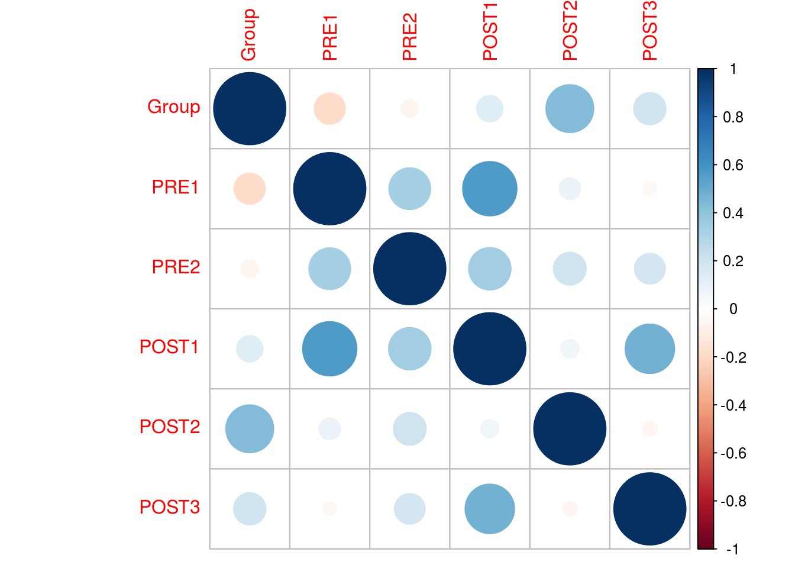
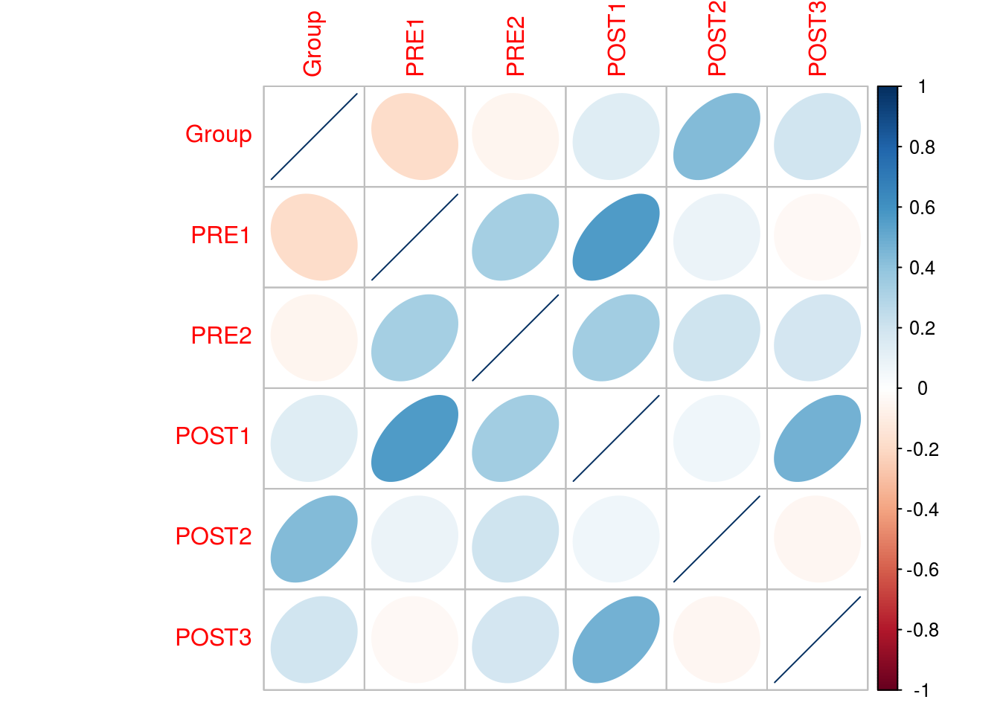
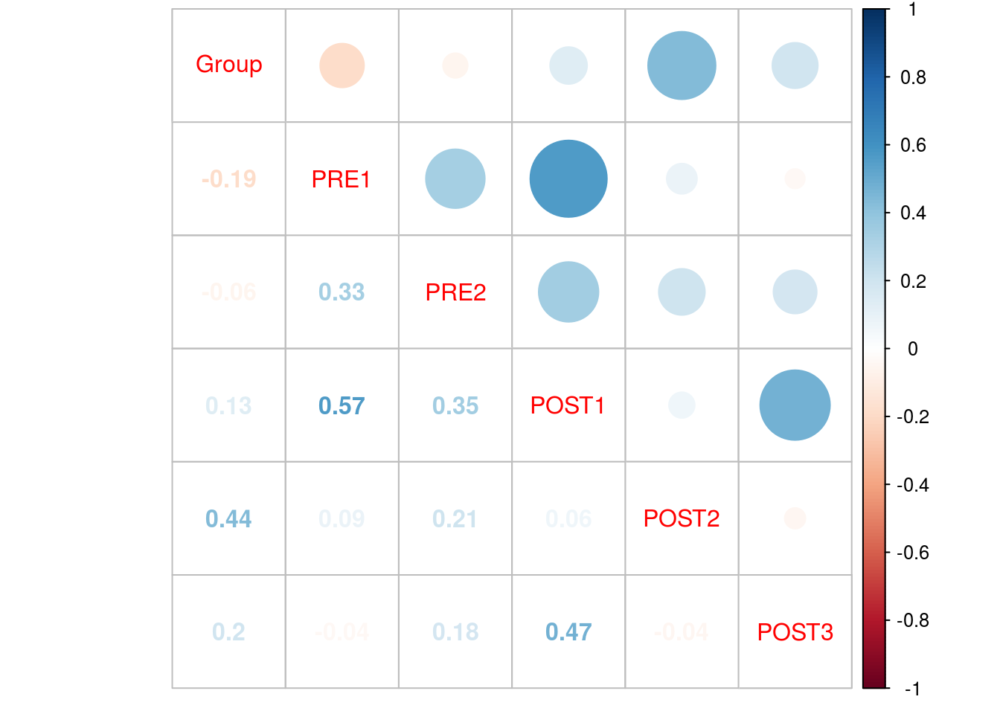
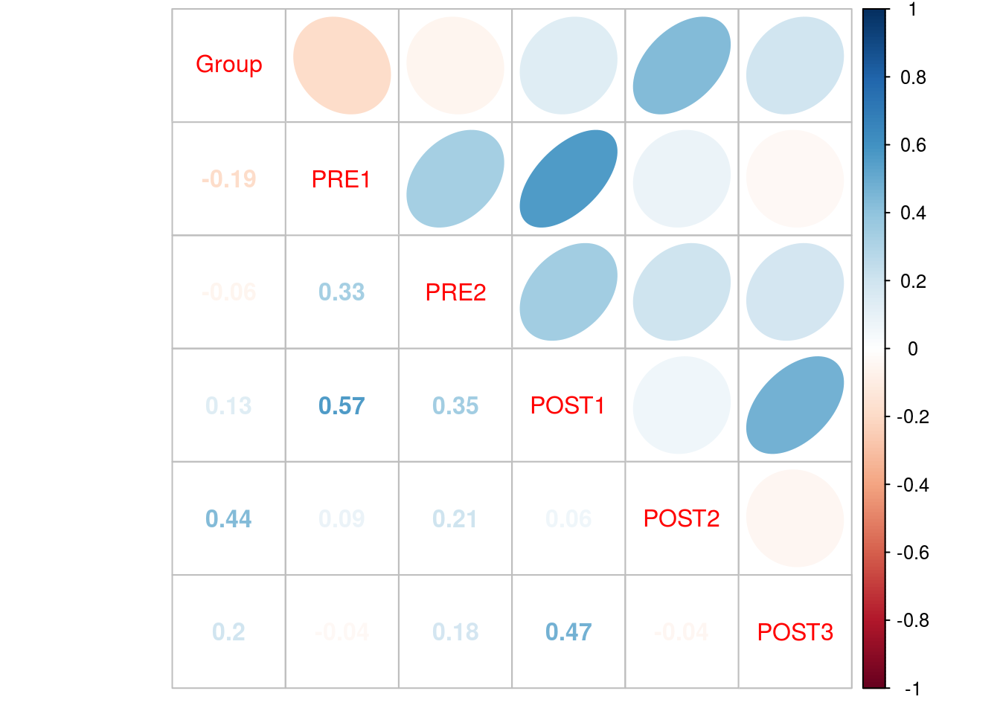
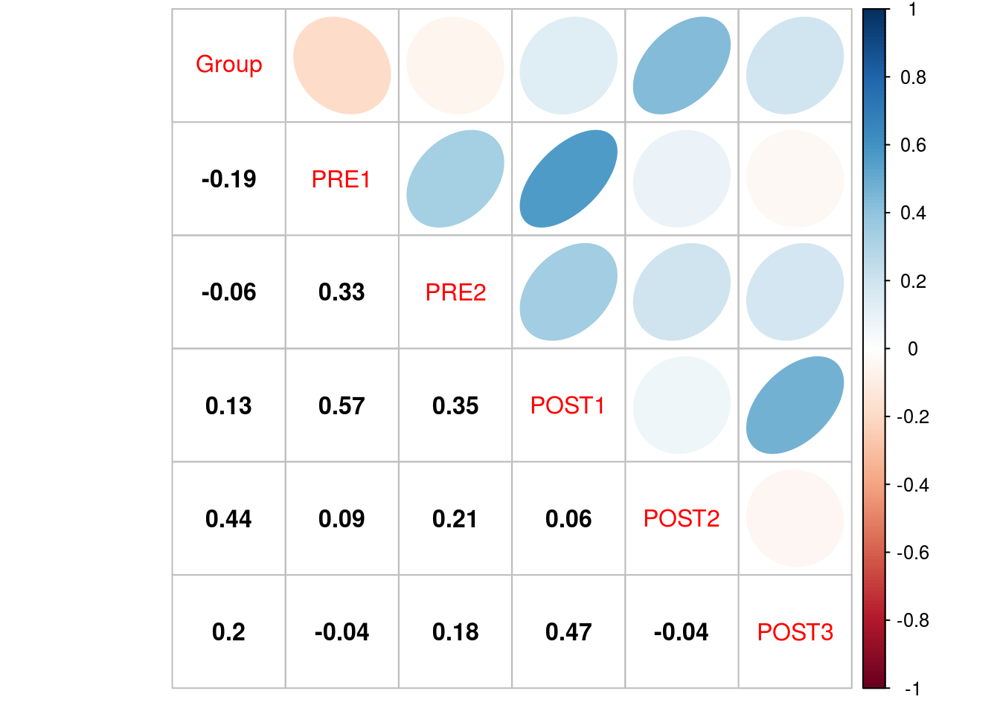

K1 corrplot
by Doc P, 10 Jun 2020
“corrplot” is a useful package for doing exploratory analyses of correlational data. This turorial will demonstrate the basic fetures of the package using the “CorExample2” data set. This dataset contains pre and post test scores for 66 subjects on a series of reading comprehension tests. When I imported the data I shortened the name to CorEx just to save some typing. I have already installed the “corrplot” package and as well as importing and attaching the data.
First, let’s run the “cor” command from base R to generate a matrix of correlation coeficients for the data set.
cor(CorEx)## Group PRE1 PRE2 POST1 POST2 POST3
## Group 1.00000000 -0.18571906 -0.05915376 0.13223726 0.43986753 0.19983331
## PRE1 -0.18571906 1.00000000 0.33488057 0.56590255 0.08883615 -0.03740325
## PRE2 -0.05915376 0.33488057 1.00000000 0.34514482 0.20580036 0.18093653
## POST1 0.13223726 0.56590255 0.34514482 1.00000000 0.06439532 0.47008487
## POST2 0.43986753 0.08883615 0.20580036 0.06439532 1.00000000 -0.04191999
## POST3 0.19983331 -0.03740325 0.18093653 0.47008487 -0.04191999 1.00000000This produces a matrix of all of the possible correlations among the variables in the dataset. It is not, however, arranged in a manner that makes it easy to view or evaluate. “corrplot” provides a number of enhancements to the presentation.
We will first put the results of our “cor” command into an R object so that it may be fruther evaluated, then we will call the “corrplot” library to activate the package and, finally, we will run “corrplot” on the object.
object <- cor(CorEx)
library(corrplot)## corrplot 0.84 loadedcorrplot(object)
This produces the basic “corrplot” matrix with positive correlations shown in blue andnegative correlations in red. Larger and more intense dots indicate stronger correlations while small and light dots indicate weaker correlations.
The large, blue dots on the diagonal are the correlation of each variable with itself (so r = +1) while the dots above and below the diagonal are the correlations of each row with each column,
There are a number of enhancements we can add to this basic plot.
One, very useful, enhancement is to specify the “method” used to represent the correlation. While a circle is the default, there are several other options (circle, square, ellipse, color, shade, number, and pie). You might want to try each of these out so you have a feeling for what it adds, or doesn’t, to your plot. One that I find useful is the “ellipse” method.
corrplot(object, method = "ellipse")
In this plot, the perfect correlations on the diagonal are represented by a line with a positive slope while other correlations are represented by a right or left leaning ellipse of varying width, depending on the strength and direction of the correlation.
Another enhancement is the ability to produce a mixed matrix. As the information above the diagonal is duplicate below the diagonal, two diffrent representations can be used to include more information into a single plot. THe command used is “corrplot.mixed”, and the example below adds the numeric correlations to our original plot.
corrplot.mixed(object)
In this plot the calculated value of r is given in the blocks below the diagonal while the intensity and color of the circle is used above the diagonal to convey the same information.
We can modify this plot to include our ellipses in the following way.
corrplot.mixed(object, upper = "ellipse", lower = "number")
I find the light colors of some of the numbers difficult to read, and I prefer the following.
corrplot.mixed(object, upper = "ellipse", lower = "number", lower.col = "black")
There are numerous other enhancements that can be made. For a number of additional examples, see https://cran.r-project.org/web/packages/corrplot/vignettes/corrplot-intro.html.